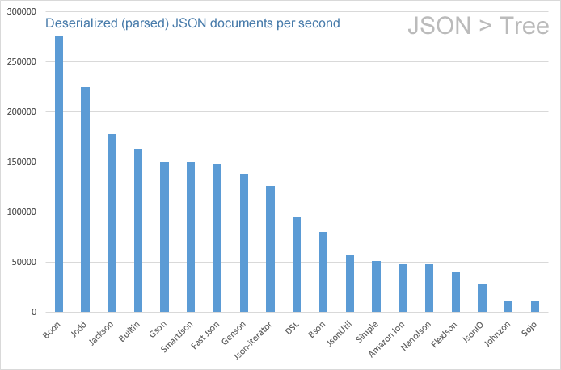
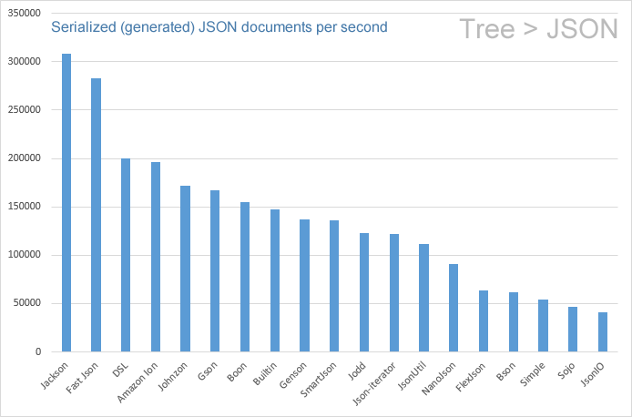

# JSON format
DataTree API supports 11 popular JSON implementations, you can use your favorite one for reading/writing JSON structures. The following sample demonstrates, how to replace the built-in JSON API to Jackson's JSON API. The only thing you have to do is add Jackson JARs to the classpath. If DataTree detects Jackson API on classpath, DataTree will use Jackson's Object Mapper to read/write JSON documents.
<!-- DATATREE API -->
<dependency>
<groupId>com.github.berkesa</groupId>
<artifactId>datatree-adapters</artifactId>
<version>2.1.0</version>
</dependency>
<!-- JACKSON JSON API -->
<dependency>
<groupId>com.fasterxml.jackson.core</groupId>
<artifactId>jackson-databind</artifactId>
<version>2.22.2</version>
</dependency>
import io.datatree.Tree;
// Build a small document (an object with a nested array):
Tree document = new Tree();
document.put("name", "Alice");
document.put("age", 30);
document.putList("languages").add("Java").add("Go");
// Generate a JSON string from the Tree (Jackson, when it is on the classpath):
String json = document.toString();
System.out.println(json);
The printed output (JSON is the default format, so toString() with no arguments produces it):
{
"name":"Alice",
"age":30,
"languages":[
"Java",
"Go"
]
}
Parsing a JSON string back into a Tree is just the constructor — no format name needed, JSON is
the default:
Tree parsed = new Tree(json);
int age = parsed.get("age", 0); // 30
That is all. The table below shows the dependencies of the supported JSON implementations. If you add Gson dependency to classpath instead of Jackson, DataTree will use Gson, and so on.
# Using BSON (MongoDB) API
This is a Java API for MongoDB (JSON and BSON). Set as default JSON API (using Java System Properties):
-Ddatatree.json.reader=io.datatree.dom.adapters.JsonBson
-Ddatatree.json.writer=io.datatree.dom.adapters.JsonBson
Set as default JSON API (using static methods). The registry classes and the adapters live in these packages (imports shown once for all the static-method examples below):
import io.datatree.dom.TreeReaderRegistry;
import io.datatree.dom.TreeWriterRegistry;
import io.datatree.dom.adapters.JsonBson; // ...or any other io.datatree.dom.adapters.* adapter
static {
JsonBson jsonBson = new JsonBson();
TreeReaderRegistry.setReader("json", jsonBson);
TreeWriterRegistry.setWriter("json", jsonBson);
}
BSON dependencies
To use BSON JSON API, add the following dependency to the build script:
group: 'org.mongodb', name: 'bson', version: '5.10.0' (opens new window)
# Using DSLJson API
This is a DSL Platform compatible JSON library (https://dsl-platform.com). Set as default JSON API (using Java System Properties):
-Ddatatree.json.reader=io.datatree.dom.adapters.JsonDSL
-Ddatatree.json.writer=io.datatree.dom.adapters.JsonDSL
Set as default JSON API (using static methods):
static {
JsonDSL jsonDSL = new JsonDSL();
TreeReaderRegistry.setReader("json", jsonDSL);
TreeWriterRegistry.setWriter("json", jsonDSL);
}
DSLJson dependencies
To use DSLJson JSON API, add the following dependency to the build script:
group: 'com.dslplatform', name: 'dsl-json', version: '2.0.2' (opens new window)
# Using Genson JSON API
Genson API is designed to be easy to use, it handles for you all the databinding, streaming and much more. Set as default JSON API (using Java System Properties):
-Ddatatree.json.reader=io.datatree.dom.adapters.JsonGenson
-Ddatatree.json.writer=io.datatree.dom.adapters.JsonGenson
Set as default JSON API (using static methods):
static {
JsonGenson jsonGenson = new JsonGenson();
TreeReaderRegistry.setReader("json", jsonGenson);
TreeWriterRegistry.setWriter("json", jsonGenson);
}
Genson dependencies
To use Genson JSON API, add the following dependency to the build script:
group: 'com.owlike', name: 'genson', version: '1.6' (opens new window)
# Using Google Gson JSON API
Gson is a Java library that can be used to convert Java Objects into their JSON representation. It can also be used to convert a JSON string to an equivalent Java object. Gson can work with arbitrary Java objects including pre-existing objects that you do not have source-code of. Set as default JSON API (using Java System Properties):
-Ddatatree.json.reader=io.datatree.dom.adapters.JsonGson
-Ddatatree.json.writer=io.datatree.dom.adapters.JsonGson
Set as default JSON API (using static methods):
static {
JsonGson jsonGson = new JsonGson();
TreeReaderRegistry.setReader("json", jsonGson);
TreeWriterRegistry.setWriter("json", jsonGson);
}
Gson dependencies
To use Gson JSON API, add the following dependency to the build script:
group: 'com.google.code.gson', name: 'gson', version: '2.14.0' (opens new window)
# Using Jackson JSON API
Standard JSON library for Java (or JVM platform in general), or, as the "best JSON parser for Java". Set as default JSON API (using Java System Properties):
-Ddatatree.json.reader=io.datatree.dom.adapters.JsonJackson
-Ddatatree.json.writer=io.datatree.dom.adapters.JsonJackson
Set as default JSON API (using static methods):
static {
JsonJackson jsonJackson = new JsonJackson();
TreeReaderRegistry.setReader("json", jsonJackson);
TreeWriterRegistry.setWriter("json", jsonJackson);
}
Jackson dependencies
To use Jackson JSON API, add the following dependency to the build script:
group: 'com.fasterxml.jackson.core', name: 'jackson-databind', version: '2.22.2' (opens new window)
# Using Jodd JSON API
Jodd Json is lightweight library for (de)serializing Java objects into and from JSON. Set as default JSON API (using Java System Properties):
-Ddatatree.json.reader=io.datatree.dom.adapters.JsonJodd
-Ddatatree.json.writer=io.datatree.dom.adapters.JsonJodd
Set as default JSON API (using static methods):
static {
JsonJodd jsonJodd = new JsonJodd();
TreeReaderRegistry.setReader("json", jsonJodd);
TreeWriterRegistry.setWriter("json", jsonJodd);
}
Jodd dependencies
To use Jodd JSON API, add the following dependency to the build script:
group: 'org.jodd', name: 'jodd-json', version: '6.0.3' (opens new window)
# Using Apache Johnzon API
Apache Johnzon is a project providing an implementation of JsonProcessing (aka jsr-353) and a set of useful extension for this specification like an Object mapper, some JAX-RS providers and a WebSocket module provides a basic integration with Java WebSocket API. Set as default JSON API (using Java System Properties):
-Ddatatree.json.reader=io.datatree.dom.adapters.JsonJohnzon
-Ddatatree.json.writer=io.datatree.dom.adapters.JsonJohnzon
Set as default JSON API (using static methods):
static {
JsonJohnzon jsonJohnzon = new JsonJohnzon();
TreeReaderRegistry.setReader("json", jsonJohnzon);
TreeWriterRegistry.setWriter("json", jsonJohnzon);
}
Johnzon dependencies
To use Johnzon JSON API, add the following dependencies to the build script:
group: 'org.apache.johnzon', name: 'johnzon-mapper', version: '2.2.0' (opens new window)
group: 'jakarta.json', name: 'jakarta.json-api', version: '2.1.3' (opens new window)
# Using JsonIO API
JsonIO - Convert Java to JSON. Convert JSON to Java. PrettyFormatter print JSON. Java JSON serializer. Set as default JSON API (using Java System Properties):
-Ddatatree.json.reader=io.datatree.dom.adapters.JsonJsonIO
-Ddatatree.json.writer=io.datatree.dom.adapters.JsonJsonIO
Set as default JSON API (using static methods):
static {
JsonJsonIO jsonJsonIO = new JsonJsonIO();
TreeReaderRegistry.setReader("json", jsonJsonIO);
TreeWriterRegistry.setWriter("json", jsonJsonIO);
}
JsonIO dependencies
To use JsonIO JSON API, add the following dependency to the build script:
group: 'com.cedarsoftware', name: 'json-io', version: '4.110.0' (opens new window)
# Using NanoJson API
NanoJson is a tiny, compliant JSON parser and writer for Java. Set as default JSON API (using Java System Properties):
-Ddatatree.json.reader=io.datatree.dom.adapters.JsonNano
-Ddatatree.json.writer=io.datatree.dom.adapters.JsonNano
Set as default JSON API (using static methods):
static {
JsonNano jsonNano = new JsonNano();
TreeReaderRegistry.setReader("json", jsonNano);
TreeWriterRegistry.setWriter("json", jsonNano);
}
NanoJson dependencies
To use NanoJson JSON API, add the following dependency to the build script:
group: 'com.grack', name: 'nanojson', version: '1.10' (opens new window)
# Using Json-smart API
Json-smart is a performance focused, JSON processor lib. Set as default JSON API (using Java System Properties):
-Ddatatree.json.reader=io.datatree.dom.adapters.JsonSmart
-Ddatatree.json.writer=io.datatree.dom.adapters.JsonSmart
Set as default JSON API (using static methods):
static {
JsonSmart jsonSmart = new JsonSmart();
TreeReaderRegistry.setReader("json", jsonSmart);
TreeWriterRegistry.setWriter("json", jsonSmart);
}
Json-smart dependencies
To use Json-smart JSON API, add the following dependency to the build script:
group: 'net.minidev', name: 'json-smart', version: '2.6.0' (opens new window)
# Using Amazon Ion API
Amazon Ion is a richly-typed, self-describing, hierarchical data serialization format offering interchangeable binary and text representations. The text format (a superset of JSON) is easy to read and author, supporting rapid prototyping. The rich type system provides unambiguous semantics for long-term preservation of business data which can survive multiple generations of software evolution. Ion was built to solve the rapid development, decoupling, and efficiency challenges faced every day while engineering large-scale, service-oriented architectures. Set as default JSON API (using Java System Properties):
-Ddatatree.json.reader=io.datatree.dom.adapters.JsonIon
-Ddatatree.json.writer=io.datatree.dom.adapters.JsonIon
Set as default JSON API (using static methods):
static {
JsonIon jsonIon = new JsonIon();
TreeReaderRegistry.setReader("json", jsonIon);
TreeWriterRegistry.setWriter("json", jsonIon);
}
Ion dependencies
To use Amazon Ion JSON API, add the following dependency to the build script:
group: 'com.amazon.ion', name: 'ion-java', version: '1.12.0' (opens new window)
# Using Built-in parser
The JsonBuiltin is the default JSON reader / writer.
Set as default JSON API (using Java System Properties):
-Ddatatree.json.reader=io.datatree.dom.builtin.JsonBuiltin
-Ddatatree.json.writer=io.datatree.dom.builtin.JsonBuiltin
Set as default JSON API (using static methods):
static {
JsonBuiltin json = new JsonBuiltin();
TreeReaderRegistry.setReader("json", json);
TreeWriterRegistry.setWriter("json", json);
}
# Using different JSON implementations for reading and writing
If DataTree detects more JSON implementations on classpath, DataTree will use the fastest implementation.
To force DataTree to use the proper APIs, use the datatree.json.reader and datatree.json.writer
System Properties to specify the appropriate Adapter Class (see above in the table) for reading and writing:
-Ddatatree.json.reader=io.datatree.dom.adapters.JsonGson
-Ddatatree.json.writer=io.datatree.dom.adapters.JsonJackson
Add Gson and Jackson to your pom.xml:
<!-- DATATREE API -->
<dependency>
<groupId>com.github.berkesa</groupId>
<artifactId>datatree-adapters</artifactId>
<version>2.1.0</version>
</dependency>
<!-- JACKSON JSON API -->
<dependency>
<groupId>com.fasterxml.jackson.core</groupId>
<artifactId>jackson-databind</artifactId>
<version>2.22.2</version>
</dependency>
<!-- GSON JSON API -->
<dependency>
<groupId>com.google.code.gson</groupId>
<artifactId>gson</artifactId>
<version>2.14.0</version>
</dependency>
After that, DataTree will use Gson API for parsing, and Jackson for generating JSON strings.
// Parsing a JSON document (Gson reads it):
String json = "{\"node\":{\"subnode\":{\"value\":7}}}";
Tree document = new Tree(json);
// Getting / setting values:
int value = document.get("node.subnode.value", 0); // 7
document.put("node.subnode.value", 5);
// Generating a JSON string from the Tree (Jackson writes it):
String out = document.toString();
# Performance of JSON APIs
# JSON readers/parsers
The higher values are better:

Created at January 22, 2020 Sample JSON (opens new window)
# JSON writers/serializers
The higher values are better:

Created at January 22, 2020 Sample JSON (opens new window)
# Feature comparison of JSON APIs
| JSON API | Long | BigInteger | BigDecimal | MongoDB | Cassandra | Binary | Pretty | Date |
|---|---|---|---|---|---|---|---|---|
| Built-in | Yes | Yes | Yes | Yes | Yes | base64 | Yes | Yes |
| SmartJson | Yes | Yes | Yes | Yes | Yes | base64 | Yes | Yes |
| DSLJson | Yes | Yes | Yes | Yes | Yes | base64 | Yes | Yes |
| Amazon Ion | Yes | Yes | Yes | Yes | Yes | special base64 | Yes | Yes |
| NanoJson | Yes | Yes | No | Yes | Yes | base64 | Yes | Yes |
| Jackson | Yes | Yes | No | Yes | Yes | base64 | Yes | Yes |
| Jodd | Yes | Yes | No | Yes | Yes | base64 | Yes | Yes |
| Genson | Yes | No | No | Yes | Yes | base64 | Yes | Yes |
| Gson | Yes | No | No | Yes | Yes | base64 | Yes | Yes |
| JsonIO | Yes | No | No | Yes | Yes | base64 | Yes | Yes |
| Bson | Yes | No | No | Yes | Yes | special base64 | Yes | special |
| Johnzon | No | No | No | Yes | Yes | base64 | Yes | Yes |
The meanings of the columns are as follows:
- JSON API: Name of the underlying JSON API
- Long: Deserializes 64-bit integers as Long, without overflowing
- BigInteger: Automatically deserializes very long (>64-bit) integers as BigInteger
- BigDecimal: Automatically deserializes very long floating-point numbers as BigDecimal
- MongoDB: Able to serialize MongoDB types (ObjectID, BsonDateTime, BsonRegularExpression, etc.)
- Cassandra: Serializes all datatypes of Appache Cassandra (UUID, Date, Set, InetAddress, etc.)
- Binary: Output format of byte arrays in the generated JSON file
- Pretty: Supports pretty-printing (formatted JSON output)
- Date: Able to serialize Date objects in custom timestamp format